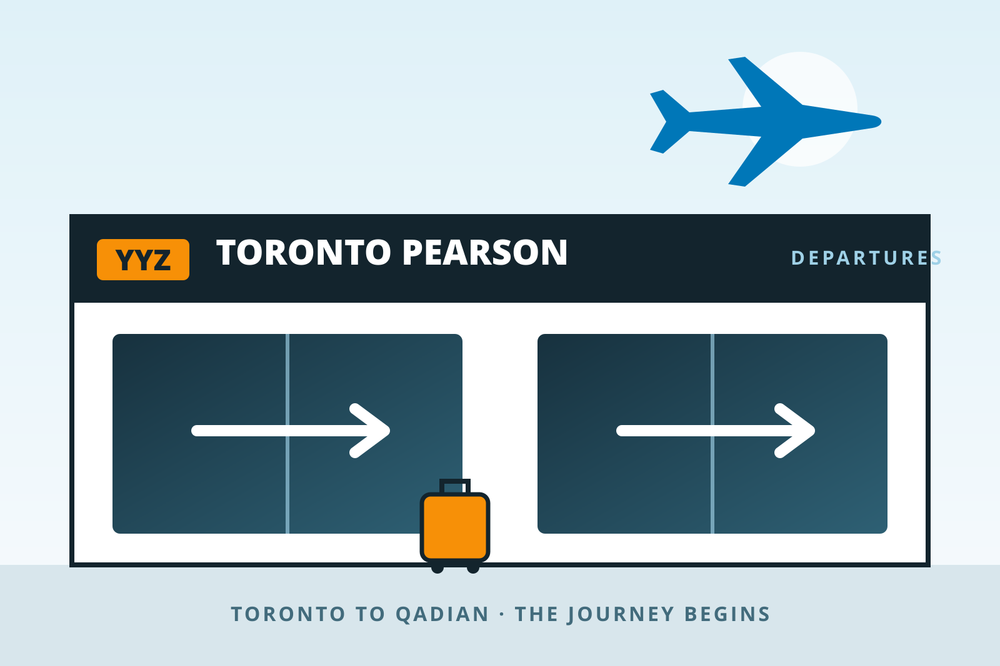

Chapter 1 of 22
The Journey Begins

Only a few hours remain before our flight departs from Toronto. Earlier today, someone shared pictures on WhatsApp from the airport, moments before boarding their flight to Qadian. As I looked at their faces filled with anticipation, a wave of emotions I had never experienced before swept over me. The reality sank in—we are about to embark on a journey to the birthplace of the Imam of the Age, Hazrat Mirza Ghulam Ahmad (as).
I cannot help but reflect on the profound prophecy he made, foretelling that people from every corner of the earth would one day be drawn to this humble town. When the world turned its back on him, God reassured him with the powerful question: “Is Allah not sufficient for His servant?” These words of divine comfort strengthened him in his trials and became the bedrock of his trust in the Almighty. When he faced rejection and isolation, God promised: “I shall cause thy message to reach the corners of the earth.” Today, as we prepare to step onto the plane, I feel the fulfillment of those divine words in my very soul. We are traveling from the farthest reaches of the globe to honor his legacy and offer our humble greetings at his resting place.
His own words from one of his poems echo in my heart:
I was poor, humble, unknown, and unskilled.
No one knew where Qadian was.
And now look at how the world has turned to us.
Qadian has now become the epicenter of all sorts of blessings of Allah.
How miraculous is this transformation! A small, forgotten village has become a beacon of light and guidance for the world. The divine blessings showered upon Qadian have made it the spiritual epicenter that unites believers, a place where hearts and souls are revived and reconnected with their Creator.
This journey feels like more than just a physical trip; it is a pilgrimage to the heart of our spiritual heritage. From this distant land, we are drawn to Qadian, the sacred ground where the Promised Messiah (as) once walked, prayed, and tirelessly worked to spread the light of truth.
Qadian, we are coming. With hearts full of love and gratitude, we step forward on this path, ready to immerse ourselves in the blessings of your sanctity. May this journey bring us closer to our Creator, strengthen our bond with Khilafat, and deepen our understanding of the divine mission entrusted to the Promised Messiah (as).
InshAllah, this will not just be a trip, but a transformative experience for our souls.